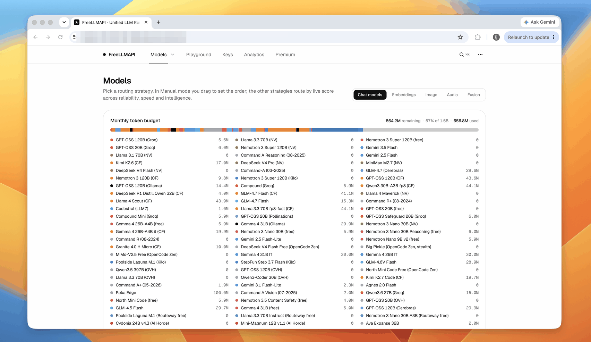

FreeLLMAPI
A free router that connects you to hundreds of AI models through their free tiers - one app, no bills.
Instead of signing up for OpenAI, Google, Anthropic and dozens of other AI services separately, FreeLLMAPI bundles their free tiers into one app on your computer and switches between them automatically when one runs out.

How does it work?
Every AI service has a free tier, but each one runs out fast. You end up juggling accounts, remembering which key goes where, and hitting limits mid-conversation.
You are drafting a long email with ChatGPT's free tier. It hits the message cap, so you switch to Gemini, lose your thread, and start over.
You install FreeLLMAPI on your computer and point your AI tools at it instead of at each provider directly.
You download the desktop app, open it from your menu bar, and paste the local address into your AI tool's settings as the provider URL.
Your existing AI prompts and conversations - nothing changes on your end except where they are sent.
The same prompt you were sending to ChatGPT now goes through FreeLLMAPI, which picks the best available free model.
It checks which free tiers still have capacity, picks the best one, and sends your request there. If it fails, it tries the next provider automatically.
- Checks your usage budget (the number of words and messages each provider allows for free) across 34 providers and 635 free model connections to find one with capacity
- Routes your request using one of 6 strategies (lowest cost, fastest, round-robin, or others) based on your setting
- If the chosen model fails or is full, it retries with the next best option automatically - you see only the answer
You send a prompt. FreeLLMAPI routes it to Gemini's free tier. Gemini is at its limit, so it retries with Mistral's free tier and returns the answer in under 2 seconds.
One AI connection that never runs out, backed by the combined free tiers of dozens of providers.
- About 7.4 billion free words and messages per month combinedThe dashboard shows a green bar tracking your remaining budget across all providers
- Automatic failover between providersIf OpenAI's free tier is full, your next message goes to Anthropic or Google without you noticing
- Encrypted local storage of all your keysYour provider keys are stored on your computer with AES-256 encryption, not sent to any server
What changes for me?
Without it
- You juggle free accounts across OpenAI, Google, Anthropic and others. Each one runs out at a different time, and you switch by hand.
- Your provider keys are scattered across apps, browser tabs and config files.
- When one free tier hits its limit, your conversation stops until you switch to another service and start over.
With it
- One app on your computer manages all your free tiers. When one runs out, it switches to the next one automatically.
- All your keys are in one place, encrypted on your machine.
- Your conversations keep going even when individual providers hit their limits - the app reroutes silently.
How hard is it to try?
Effort
- Download the desktop app for your system (macOS, Windows or Linux). It runs from the menu bar.
- Launch the app and add at least one provider key (setup instructions). The dashboard shows your combined usage budget.
- Point any AI tool that accepts a custom provider URL at FreeLLMAPI's local address and send a test prompt. Watch the dashboard route it.
What it takes on your computer
- Space on disk
- Desktop app: macOS ARM 113 MB (DMG), Windows 141 MB (zip), Linux 118 MB (AppImage). From source: needs Node.js 20 or newer.
- Memory while it runs
- About 40 MB idle (desktop app).
- Runs on
- Windows, macOS, Linux, Raspberry Pi. Desktop app or command-line install from source.
Paste this into Claude Code. It runs your safety scan first, then a 10-minute test.
/skillspector https://github.com/tashfeenahmed/freellmapi If that scan passes: download the latest release from GitHub for your platform, open the app, add one free-tier key (OpenAI or Google), and send a test prompt through the local address. 5 minutes max.
Should I?
Great if you...
- You want to experiment with many AI models without paying - FreeLLMAPI combines their free tiers so you rarely hit a wall
- You use AI tools that let you set a custom provider address and want automatic failover between models
Skip it if...
- You need reliable, production-grade AI access - free tiers have rate limits, and combining them does not change the terms of service
- You are building a product that depends on consistent model behavior - the model behind your request changes depending on availability
- You already pay for one AI service and are happy with it - the complexity of routing adds little when a single paid tier covers your use
Instead, you could look at
- OpenRouterHosted service that routes to many AI models. Has free models but is a cloud service, not a local app.
Is it safe?
- Security advisories: 0GitHub's advisory list, checked Oct 23
- Searches for CVEs, vulnerabilities, malware and scams0 results read, including the national CVE database: nothing found
- Are the stars earned?39.9K stars, 101 contributors, 995 commits
Watch out for
- Personal experimentation only. Free tiers have terms of service. Combining them through a router does not change those terms, and using them for production traffic may violate provider policies. FreeLLMAPI is for personal exploration.
- The model behind your answer changes. Smart routing picks whichever model has capacity. Two identical prompts may go to different models and give different answers.
- Premium tier exists. A $19 per year or $49 lifetime subscription adds live catalog updates. The free version works but may not track new providers as quickly.
- Six months old and fast-moving. Three releases in the last week (v0.16.6 through v0.16.8). Rapid development is good for features but means things may break between updates.
Who's using it, and for what?
FreeLLMAPI is 6 months old with 39.9K stars. No named person or team has published a case study of using it for a specific project. Real-world use reports are still early.
We couldn't find anyone describing real use of it yet. That's normal for a brand-new repo, and it's worth knowing.